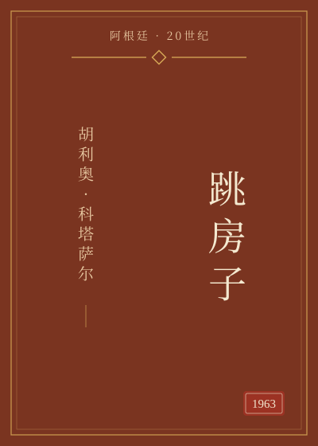

跳房子
一、基本信息
| 作者 | 胡利奥·科塔萨尔 |
|---|---|
| 成书/出版 | 1963年（Britannica：Rayuela (1963; Hopscotch)——'an open-ended novel, or antinovel'） Julio Cortazar — Encyclopaedia Britannica（百科全书） |
| 国别/地区 | 阿根廷 |
| 时代 | 现当代 · 20世纪 |
| 体裁 | 长篇小说（反小说） |
| 语言 | 西班牙语 |
《跳房子》重排结构图（主题·结构图）
二、创作背景
Britannica（B286）：'Cortázar's masterpiece, Rayuela (1963; Hopscotch), is an open-ended novel, or antinovel'；'the reader is invited to rearrange the different parts of the novel according to a plan prescribed by the author'（读者被邀请按作者规划重排章节）。
'It was the first of the boom of Latin American novels of the 1960s to gain international attention'（B286）。
三、内容脉络
拉美与巴黎的双城：奥利维拉与'俱乐部'（通说待核）。
155章+'不必读的章'——按表重排的两种读法（通说待核）。
四、主要人物表
| 人物 | 身份 | 说明 |
|---|---|---|
| 奥利维拉 | 流浪者 | （通说待核） |
| 拉蜜拉 | 女子 | （通说待核） |
五、主题与艺术特点
- 读者参与的开放文本（B286：rearrange the different parts）。
- 反小说（B286：antinovel）。
- 拉美'boom'的先声（B286：first of the boom）。
六、影响与评论
- Britannica：'masterpiece'；拉美boom第一部国际关注之作（B286）。
Julio Cortazar — Encyclopaedia Britannica（百科全书） - Britannica：魔幻元素嵌入写实（B286 语境）。
Julio Cortazar — Encyclopaedia Britannica（百科全书）
七、阅读建议
难点
- 两种读法的选择。
- 哲学对话章。
- 《跳房子》（人民文学出版社/上海译文出版社版本，通说待核）。
- 西班牙文原版（Southget）。
拉美boom进阶之作。
八、待核实
- 155章与跳读表核对。
- 奥利维拉/拉蜜拉人名核对。
- 与马尔克斯等的boom谱系待核。
本页主要来源
胡利奥·科塔萨尔的其他收录作品：跳房子